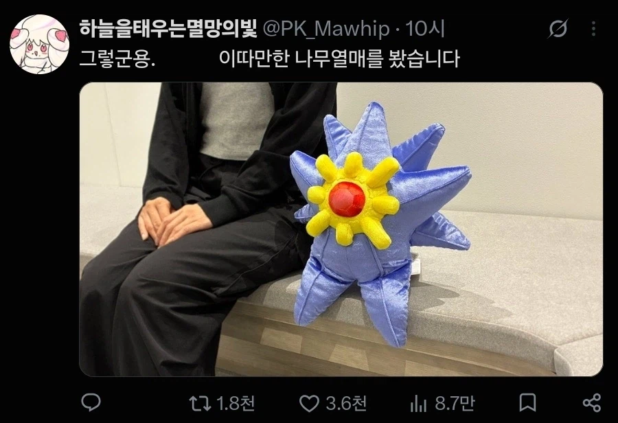

74 · 16 · 9 시간 전 · 원문

그렇군용.
수집 당시 댓글 16개
번출구 · 10 시간 전
황제께피를황금좌에해골을 · 9 시간 전
귀엽군용.
키나루디안마기 · 9 시간 전
이따만한 열매면 한번 보고 싶긴 함
갤놋10플오너 · 9 시간 전
보직군용
↳ 답글 · 힣이히히히 · 9 시간 전
개붕아
↳ 답글 · 메카다나카 · 9 시간 전
↳ 답글 · ᅟᅠ듀 · 8 시간 전
↳ 답글 · 통합협상 · 9 시간 전
↳ 답글 · YouTubecom · 8 시간 전
↳ 답글 · 스핔이 · 8 시간 전
여기서 그 드립을 칠 각을 보셨군용
小熊習近平 · 9 시간 전
↳ 답글 · 킴퓨리 · 3 시간 전
이렇게 커다란 돼지가 나라구?
시국 · 9 시간 전
메가아쿠스타 생각나서 뻘하게 웃기네 ㅋㅋㅋㅋㅋㅋㅋ
MISFITZ · 8 시간 전
아ㅋㅋㅋ ㅈㄴ귀엽네
노엘갤러거스하이플라잉버즈 · 8 시간 전
메가아쿠스타 너무 귀여워
의도가 다분한 대유쾌 마운틴
그런데이것은틀렸습니다 · 5 시간 전
디자인이 너무 어이없음 ㅋㅋㅋㅋㅋ 시발

그렇군용.